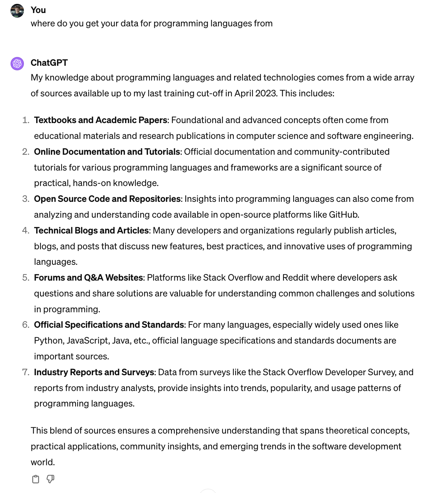
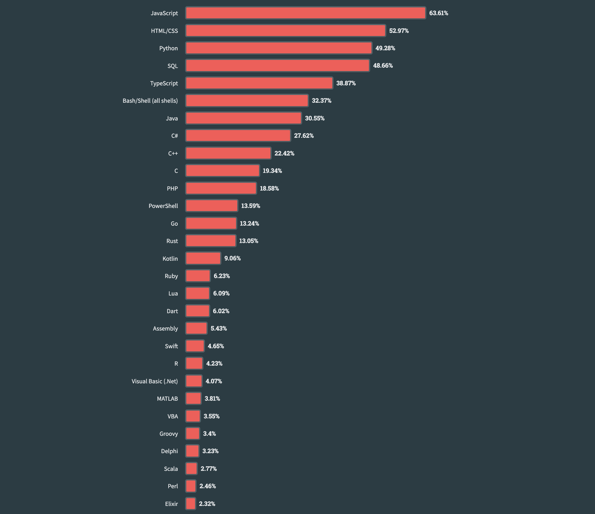
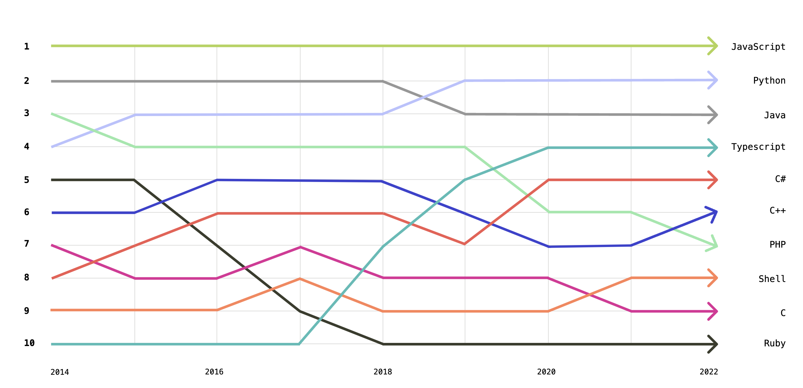
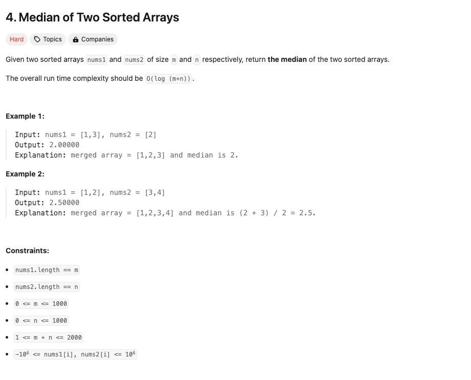
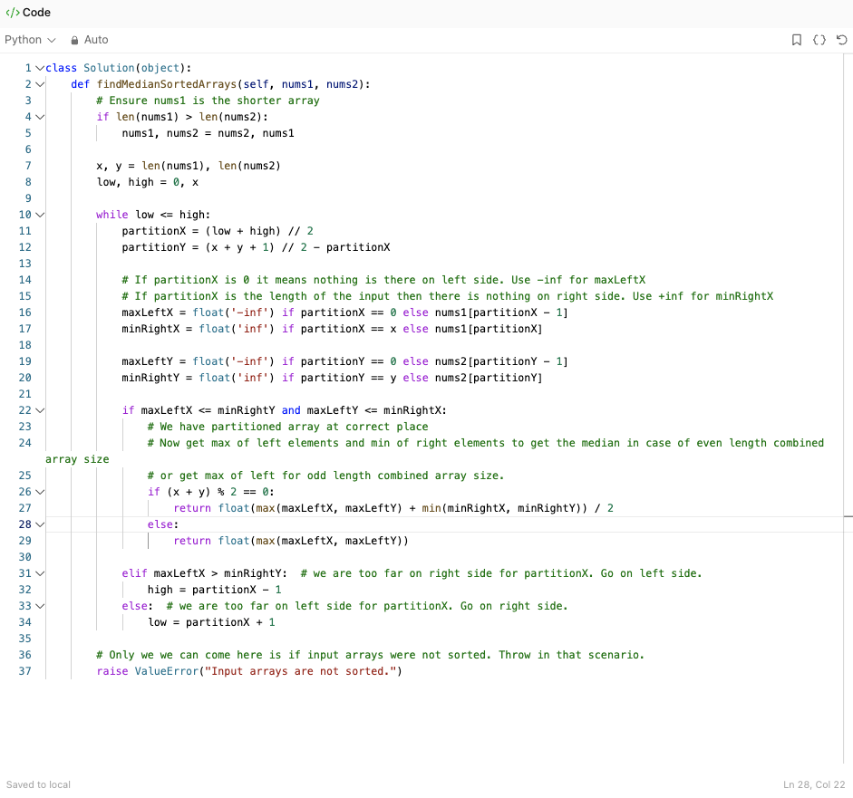
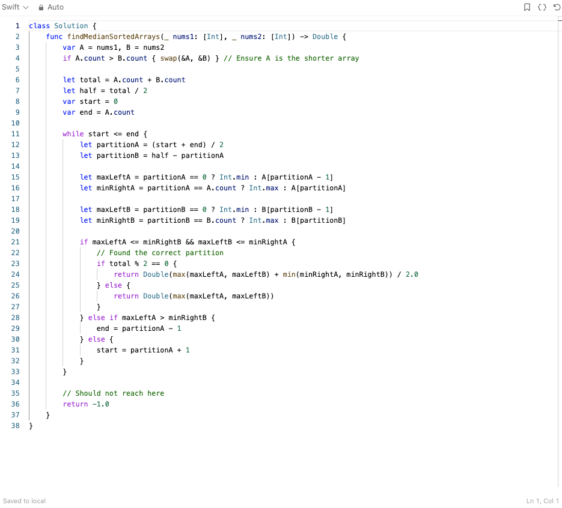

Prompt: Draw an image of ChatGPT evaluating the programming languages that it knows
Prompt: Draw an image of ChatGPT evaluating the programming languages that it knows
Is ChatGPT actually the best friend of every programmer?
If you are a software engineer, data analyst, cloud architect, or still a CS student like me, we both know that throughout the past few years, LLMs, in general, have become a really helpful and interesting tool whether you are testing, coding, or debugging. I am not saying that you should avoid thinking logically about programming and give up on your daily hustle on LeetCode to start using only ChatGPT to develop your programs. My point is that for conducting repetitive and tedious tasks in simpler programs that do not involve integrating multiple systems or frameworks, having an LLM like Microsoft or ChatGPT can be quite handy.
Of course, as we all know, even though LLMs are becoming more assertive every single day, they are still far from being perfect or at least similar to the human brain in terms of cognitive skills. Still, ChatGPT 4.0, in particular, gives some pretty good answers for coding problems, like the ones that you find in LeetCode’s in the easy and medium difficulty categories.
Ok, but what does data have to do with the efficiency of ChatGPT or its usefulness in solving coding questions?
Well, to answer this question, I would like to talk about an experience that I went through one of these past few days in one of my coding classes. In this case, it is a class focused on developing mobile applications, with Swift, a not-so-popular programming language used mostly for applications run by Apple devices, such as iOS and MAC OS programs. The class itself is great, and I always catch myself trying to develop apps by myself and work further on the topics discussed in class. For instance, I was trying to develop a simple app that displayed some texts based on text inputted by the user. For this application, I stored the variables and info in a state similar to what is done with hooks in React. Since I still do not know that much about Swift syntax and properties, I asked him to help me implement conditionals in some of my variables stored in the game state. Usually, this kind of problem is easily solved by ChatGPT when I ask to come up with solutions in JavaScript, for example. But, for Swift, it just did not work: ChatGPT spent minutes evaluating and reevaluating its output, which, after multiple attempts, did not work at all. Quite an unexpected behavior for such a powerful AI tool. So, I caught myself thinking, why?
Now, data comes in…
As Sam Altman said, “Data rules!” (I’m just kidding; I have no idea if he actually said that.) Still, data is pivotal to the proper functioning of LLMs, especially for the “learning” phases. In a simple way, LLMs fundamentally get data from the internet through methods such as web scrapping on a wide variety of topics. Once it has obtained the data, it starts to train the LLM model and perform a series of learning steps. Once the LLMs are trained and learned through data, a series of other important steps are executed to optimize the LLM, such as fine-tuning, which helps in establishing the parameter temperatures for certain inputs and contexts.
In summary, data is fundamental for ChatGPT in answering a certain question. For instance, if I type “What is the name of Gabriel Thiessen’s Dachshund?”, the answer is the following

That is quite obvious and predictable because there is no available online data about it.
What about programming languages?
Considering what you just read, you may assume that data is fundamental for LLMs’ ability to write code and reason in different programming languages, and you are 1000% right. According to ChatGPT itself, the way that it is able to develop complex coding solutions and be the life savior of multiple programmers is mainly by performing web scrapping and evaluating data from multiple sources like websites, forums, academic papers, and many others on coding. For instance, here is what ChatGPT has to say.

Data inequality
Ok, ChatGPT indeed relies on a pretty straightforward and scientific approach to providing answers to problems that are focused on programming. However, the fact that it relies on information available on the web to elaborate solutions to coding questions posed by the users also indicates that if, for instance, there is not that much information about a certain programming language online, it will also reflect on the quality of ChatGPT’s answer. The reason is that with little data, there is less orientation on how to formulate responses. And if you are wondering, yes, there is a massive difference in the amount of data available on GitHub repositories and StackOverflow forums for each programming language (which, as shown, are some of the main sources of data for ChatGPT). For instance, the graph below indicates the most popular programming languages for StackOverflow devs in the year 2023.

As it is possible to see, Python is the third most popular language (which obviously reflects on the amount of StackOverflow discussions), while Swift occupies the 20th position. The same trend is also seen in GitHub, according to this graph from GitHub itself, which represents the ten most popular programming languages in the year 2023.

Again, Python is ranked high up, while Swift is not even mentioned.
How does it reflect on ChatGPT performance
To actually check if the difference in available data actually affects ChatGPT’s response to different prompts, I will test how ChatGPT performs on solving a hard LeetCode (which is the main online platform to practice solving technical coding questions) problem by asking it to solve the problem both with Python and Swift.
LeetCode problem
Firstly, here is the LeetCode problem that I am trying to solve using ChatGPT both in Python and Swift

Python: apparently, ChatGPT’s close friend
Firstly, I asked ChatGPT to solve this problem using Python, and this was the answer that it came up with.

Without any big issue, ChatGPT came up with a solution that was accepted without any issue by LeetCode.
Swift: I don’t think ChatGPT likes Swift that much…
However, when I asked ChatGPT to come up with a solution to the same question but in Swift, the result was the complete opposite.

Not only did it take ChatGPT longer to come up with the answer, but when I tried to validate it on LeetCode, it was wrong!
What can we conclude?
I know, I know, this conclusion is not entirely scientific, and there are many other steps that I should take to properly quantify how important is online data for ChatGPT’s performance, especially related to programming. However, I believe that this post brings up a nice constraint on perhaps the most powerful tool of the last few decades: without data, ChatGPT is nothing. So, while ChatGPT relies somehow on the available data, enjoy your time of supremacy, humanity!
Thank you for reading!